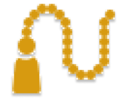

<ion-header [translucent]="true">
  <ion-toolbar>
    <ion-title>chapelet</ion-title>
  </ion-toolbar>
</ion-header>

<ion-content [fullscreen]="true">
  <ion-header collapse="condense">
    <ion-toolbar>
      <!-- header  -->


      <!-- header  -->

    </ion-toolbar>
  </ion-header>
  <!-- main  -->
  <h2 class="chapelet">Chapelet</h2> <br>

  <div class="counter">
    <span class="count">0</span>
  </div>

  <div class="image">
    
  </div>

  <div class="icon-btn">
     
      <ion-icon color="success" name="refresh-outline"></ion-icon>

   
      <ion-icon color="success" name="add-outline"></ion-icon>   

  </div>
  <!-- <div class="icon-btn">
   
   
  </div> -->

  <div class="liste-lecture">
    <div class="el">
    <h4 class="titre" > Laylat al Miraj</h4>
    <p class="contenu">Contenu</p>
  </div>
     <div class="line"></div>
    <div class="el">
    <h4 class="titre"> Laylat al Miraj</h4>
    <p class="contenu">Contenu</p>
  </div>
     <div class="line"></div>
    <div class="el">
    <h4 class="titre"> Laylat al Miraj</h4>
    <p class="contenu">Contenu</p>
  </div>
     <div class="line"></div>
    
  </div>
  <!-- main  -->

</ion-content>
